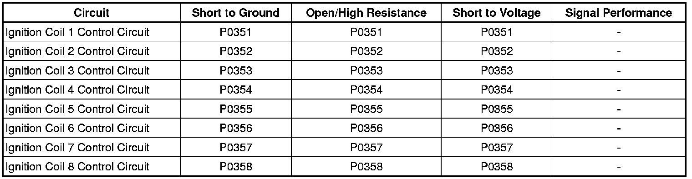

P0356
DTC P0351-P0358
Diagnostic Instructions
* Perform the Diagnostic System Check - Vehicle (Initial Inspection and Diagnostic Overview) prior to using this diagnostic procedure.
* Review Strategy Based Diagnosis (Initial Inspection and Diagnostic Overview) for an overview of the diagnostic approach.
* Diagnostic Procedure Instructions (Initial Inspection and Diagnostic Overview)provides an overview of each diagnostic category.
DTC Descriptors
DTC P0351
- Ignition Coil 1 Control Circuit
DTC P0352
- Ignition Coil 2 Control Circuit
DTC P0353
- Ignition Coil 3 Control Circuit
DTC P0354
- Ignition Coil 4 Control Circuit
DTC P0355
- Ignition Coil 5 Control Circuit
DTC P0356
- Ignition Coil 6 Control Circuit
DTC P0357
- Ignition Coil 7 Control Circuit
DTC P0358
- Ignition Coil 8 Control Circuit
Diagnostic Fault Information

Circuit/System Description
The ignition system on this engine uses an individual module/coil for each cylinder. The engine control module (ECM) controls the spark event for each cylinder through the 8 individual ignition control (IC) circuits. When the ECM commands the IC circuit ON, electrical current will flow through the primary winding of the ignition coil, creating a magnetic field. When a spark event is requested, the ECM will command the IC circuit OFF, interrupting current flow through the primary winding. The magnetic field created by the primary winding will collapse across the secondary coil windings, producing a high voltage across the spark plug electrodes. The ECM uses information from the crankshaft position (CKP) sensor, and the camshaft position (CMP) sensor for sequencing and timing of the spark events. The ECM monitors each IC circuit for improper voltage levels. Each ignition module/coil assembly has the following electrical circuits attached:
* An ignition 1 voltage circuit
* A ground circuit
* An IC circuit
* A low reference circuit
Conditions for Running the DTC
* The engine is cranking or running.
* DTCs P0351-P0358 runs continuously when the above condition is met.
Conditions for Setting the DTC
The ECM detects one of the following failures on the IC circuit for up to 6 seconds:
* An open
* A short to ground
* A short to voltage
Actions Taken When the DTC Sets
DTC P0351-P0358 are Type B DTCs.
Conditions For Clearing the DTC
DTC P0351-P0358 are Type B DTCs.
Reference Information
Schematic Reference
Engine Controls Schematics (Electrical Diagrams)
Connector End View Reference
Component Connector End Views (Connector Views)
Electrical Information Reference
* Circuit Testing (Component Tests and General Diagnostics)
* Connector Repairs (Component Tests and General Diagnostics)
* Testing for Intermittent Conditions and Poor Connections (Component Tests and General Diagnostics)
* Wiring Repairs (Component Tests and General Diagnostics)
DTC Type Reference
Powertrain Diagnostic Trouble Code (DTC) Type Definitions (Diagnostic Trouble Code Descriptions)
Scan Tool Reference
Control Module References (Programming and Relearning)for scan tool information
Circuit/System Verification
1. Start and run the engine.
2. With a scan tool, monitor that all eight ignition control (IC) circuit status parameters display OK.
3. Observe the Misfire Current counters using the scan tool. The counters should not be incrementing
4. Engine running, observe the DTC information with a scan tool. DTCs P0351-P0358 should not set.
5. Operate the vehicle within the Conditions for Running the DTC. You may also operate the vehicle within the conditions that you observed from the Freeze Frame/Failure Records data.
Circuit/System Testing
1. Turn OFF the ignition.
2. Disconnect the ECM.
Important: A high resistance on any IC circuit can cause a misfire before the DTC sets.
3. Test the affected IC circuit for the following.
* Short to voltage
* Short to ground
* Open/high resistance
• If a fault is found, repair the circuit as needed.
4. Connect the ECM.
5. Exchange the affected ignition coil/module with the ignition/coil module of a good cylinder.
6. Start the engine and observe the scan tool.
• If the DTC or the misfire transfers with the suspect ignition/coil module, replace the ignition/coil .
• If the DTC or the misfire does not transfer with the suspect ignition/coil module, replace the ECM.
Repair Instructions
* Ignition Coil Replacement - Bank 1 (Service and Repair), Ignition Coil Replacement - Bank 2 (Service and Repair)
* Control Module References (Programming and Relearning)for ECM replacement, setup, and programming
Repair Verification
Important: An ignition system misfire condition can cause the 3-way catalytic converter to overheat under certain driving conditions.
If the customer concern was a flashing MIL, perform the following procedure:
1. Install any components or connectors that have been removed or replaced during diagnosis.
2. Perform any adjustment, programming, or setup procedures that are required when a component or module is removed or replaced.
3. Clear the DTCs.
4. Turn OFF the ignition for 60 seconds.
5. If the repair was related to a DTC, duplicate the Conditions for Running the DTC and use the Freeze Frame/Failure Records, if applicable, in order to verify the DTC does not reset. If the DTC resets or another DTC is present, refer to the Diagnostic Trouble Code (DTC) List - Vehicle (Diagnostic Trouble Code Descriptions) and perform the appropriate diagnostic procedure.
6. To verify that the performance of the catalytic converter has not been affected by the condition that set this DTC, perform the Repair Verification for DTC P0420 or P0430. Refer to DTC P0420 or P0430 (P0420) .